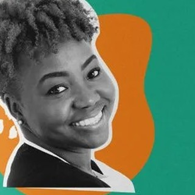

Ayesha Constable
Ayesha has researched and published on gender and climate change as part of her doctoral studies, linking her interests in agriculture, youth, and gender. She has served on several regional and global youth networks — including the Caribbean Youth Environment Network and Commonwealth Youth Climate Network — is former Caribbean Coordinator for the Sustainable Development Solutions Youth Network, a regional representative for Global Power Shift (350.org), and a Global Advisor to FRIDA – the Young Feminist Fund.